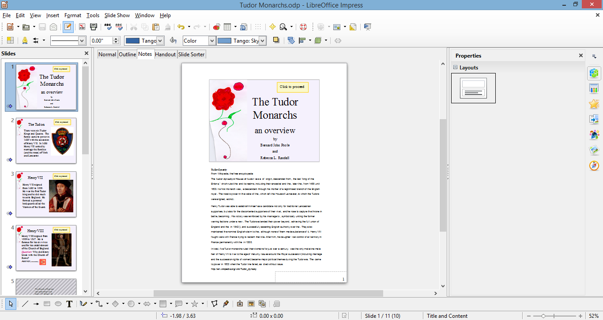
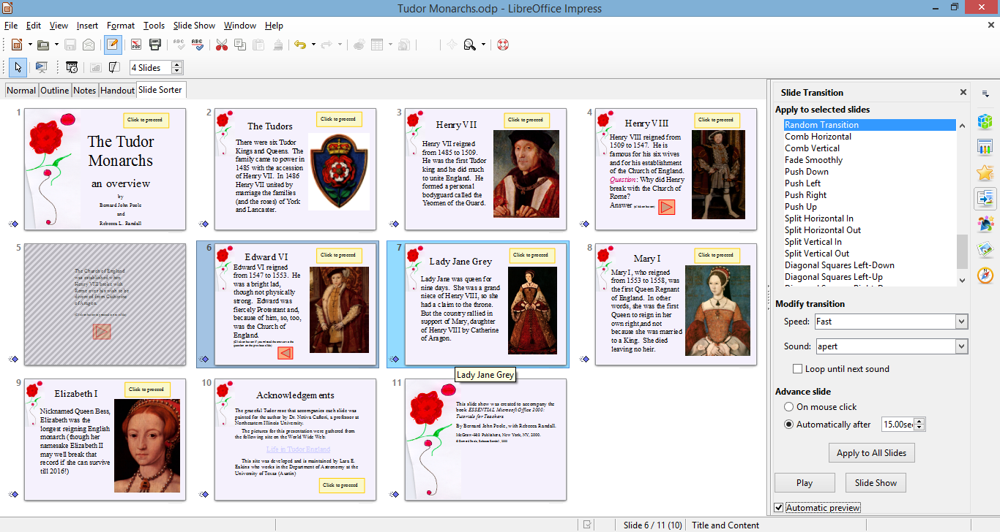
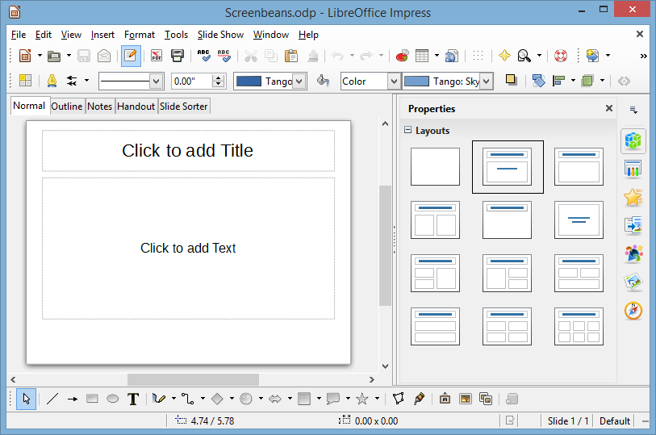
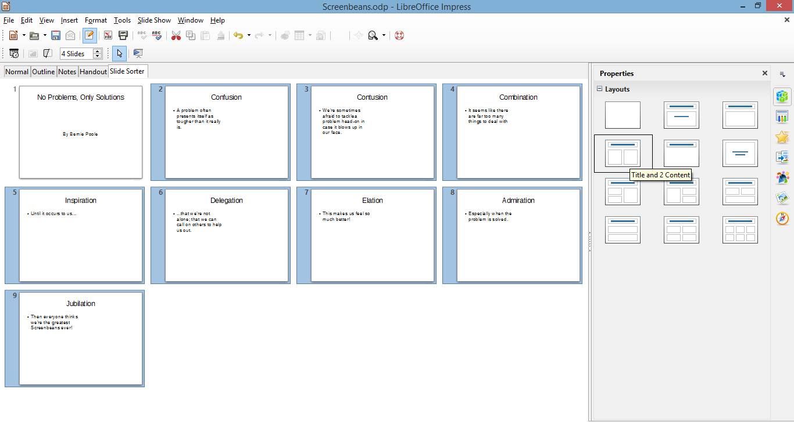
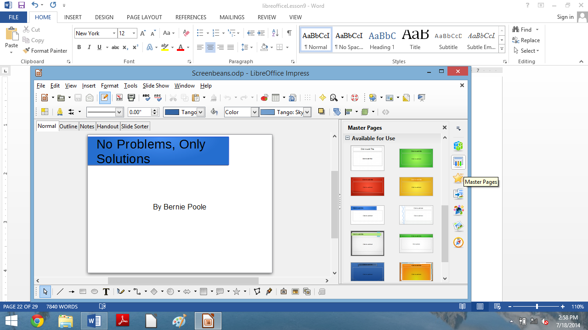

Lesson 9 IMPRESS Presentations¶
9 > IMPRESS PRESENTATIONS > > Creating slide shows
LEARNING OUTCOMES
Here are the topics that will be covered in this lesson:
- introductory thoughts about presentations;
- Impress at work;
- building the presentation;
- adding bells and whistles to the presentation;
- printing presentation handouts.
BEFORE YOU BEGIN
Setting up for the tutorial
If you completed Lesson 1 of these tutorials, you can skip the rest of this section and proceed directly to the next section (9.1 Introductory Thoughts About Presentations—next page). If you did not complete Lesson 1, then you must do this now before proceeding with the rest of Lesson 9.
The set of Work Files for LibreOffice ideally should be stored on a Flash drive (USB drive) in three folders named Base Files, Impress Files, and Miscellaneous Files. You need to create a fourth folder for the data files that you will be creating while working your way through the tutorials. This fourth folder will be called Data Files.
Here are the steps to prepare these folders now before proceeding with this tutorial.
First, Unzip the set of Work Files for LibreOffice by double clicking on the File name on your computer (your instructor will help you with this if you are working with a class) and Extract them onto your flash drive
Double click on the Work Files for LibreOffice folder to open it
Now, inside the Work Files for LibreOffice folder you need to create a new, fourth, folder called Data Files. Here’s how you do this.
In the Work Files for LibreOffice folder, select New Folder (Fig. 9.1).

Fig. 9.1 Creating a New Folder
The system will create a new folder for you and then wait for you to give it a name of your choice (Fig. 9.1 above).
Call the new folder Data Files
During the course of these tutorials you will be storing many files in this Data Files folder.
9.1 Introductory THOUGHTS ABOUT PRESENTATIONS
Making a successful—well-designed, content-rich, pedagogically-sound—Impress presentation requires forethought and advance preparation. It’s rather like what good cooks or chefs do before starting to cook a delicious dish of food. They read the recipe, make sure they have all the ingredients they need, gather all the ingredients together—the raw food such as vegetables and eggs and milk and wine and spices and other flavoring—what they call the mise en place. They make sure they have all the tools they need to do the job.
Good cooks don’t start cooking till they’re good and ready. In the same way, you have to get your thoughts together, know what you’re going to talk about, and have your audio-visual material gathered together in one place (mise en place) so that when you come to create the presentation, it’s a snap!
A good presentation, like a term paper, is usually based on an outline, such as is illustrated in Fig. 9.2.

Fig. 9.2 Outline for the Tudor Monarchs presentation
You see on the left an outline of the text for each slide in the Tudor Monarchs presentation. Think of the titles and text for each slide as an outline you would have made for a high school or college paper. Similar, right? This is why the outlining tool is built into Impress—to help you plan.
Remember the golden rules of successful design: Rule 1—Plan; Rule 2—Plan; Rule 3—Plan! These golden rules apply whether you are designing a term paper, an audio-visual aid, a class outing, or a class syllabus and schedule.
You might begin with a brainstorming session to help you get an outline. During brainstorming, members of the group would come up with as many ideas as possible related to the topic of the project. Nobody’s ideas are rejected in the early stages so as to encourage a fertile flow of useful suggestions.
The result of the brainstorming session might be a somewhat disorganized list of ideas. This list might have been entered directly into the computer during the brainstorming session, or it might have been collected on a blackboard or flip chart. Before changing the list into outline form you would re-organize it so that the ideas flowed naturally and logically from one to the other.
Along the way you might toss out some of the ideas for one reason or another. Eventually you’ll have a working list which would end up as an outline, perhaps in a word processor document.
9.2 IMPRESS AT WORK
Let’s see these ideas and others at work by looking at an example of an Impress presentation.
Turn on your computer, open LibreOffice then click on Open File and, in the Open dialog box, navigate to your USB drive > Work Files for LibreOffice > Impress Files folder and double click to open the Tudor Monarchs presentation
Fig. 9.3 shows the Tudor Monarchs presentation in Normal View as it appears on your screen right after you open the document.

Fig. 9.3 The Tudor Monarchs presentation
Take a look at the Slide View tools in the upper left corner of the Impress window (Fig. 9.3 above). You’ll use these tools a lot while you’re developing your slides, so let’s take a closer look at them right away and find out what each of them is about (Fig. 9.4).

Fig. 9.4 The Slide View tools
Different ways to view the slides in your presentation
Normal view
This is the view you see illustrated in Fig. 9.3 above. It is the one you’ll use most of the time while you’re actually putting information on each slide. In this view, you have a left hand frame where you see thumbnails of all your slides in a scroll box. In the center of the window you have the slide you are actually working on—the active slide. Then, over in the right hand frame you have the Properties Pane (not shown in Fig. 9.3 above), where you’ll find more tools to help you to develop your presentation.
Outline View
The Outline View lets you see just the text on each slide. If you want, you can use the outline tool to map out/plan the content of your show before you “pretty up” the show with graphics and colors and backgrounds and so forth.
Notes View
The Notes View is especially useful if you want to explain, or reinforce, the content of each slide, either for your own use as the presenter, or for your students, or for whoever is in your audience who would like more information than is on each actual slide. In the Notes View you are presented with a smaller version of each slide, one by one, with ample space for extra notes pertaining to the content of each slide, as illustrated in Fig. 9.5.

Fig. 9.5 The Impress Notes View showing the supplementary notes for Slide One
Handout View
Anyone who gives a presentation is, in a way, a teacher, and the people listening to him or her are, in a way, students, hoping to learn something they didn’t know before.
One of the problems with being a student is that it’s difficult to grasp right away what the teacher is trying to get across. Good teachers/presenters give their audience the opportunity to take away at least a summary of what they have had to say. Hence handouts; and LibreOffice makes handouts a snap.
Fig. 9.6 illustrates the Impress Handout View.

Fig. 9.6 The Impress Handout View
The best presentations do not overdo the use of slides! In other words, if you are presenting for 40 to 50 minutes, you shouldn’t need more than half a dozen slides—ten max.
One good rule is based on Miller’s Magical number (pertaining to short term memory). People can hold on to no more than about 7±2 items—ideas, numbers, whatever—in short term memory before those items are very quickly gone! Keep it simple and attractive to the eye is the golden rule.
But reinforcing those ideas, numbers, or whatever with some kind of follow up or repetition significantly helps retention. Handouts are one way to serve that purpose, and the Impress Handout View makes it easy to format and print (or e-share through email, Facebook, and the myriad other online social media) the Impress presentation that you have so carefully designed and produced.
*\
Slide Sorter view
This is the view you see illustrated in Fig. 9.7, and it is the one you’ll find most useful when you want to get an overview of your show while you’re working on it, since you’ll be able to see most all your slides laid out for you on one screen or page.

Fig. 9.7 The Slide Sorter View of the Presentation
You also can easily move your slides around, using the mouse to slide them into place, changing the order to suit your purposes. This is why it’s called the Slide Sorter view.
You’ll find yourself using these tools frequently to switch from one view to another as you are developing your Impress presentations. Let’s further check out the Slide Sorter view now.
Click on the Slide Sorter tool in the Slide Views toolbar (Fig. 9.7 above)
Take a look at the Slide Sorter View window that is presented to you now (more or less the same as Fig. 9.7 above, though your screen may be a different width, so the slides may be arranged differently across the page).
The presentation you are looking at demonstrates some of the basic features of Impress. By the end of this lesson you will be able to build your own presentations along the same lines.
It’s time you worked your way through the Impress presentation about the Tudor Kings and Queens of England.
Click on the Normal View in the Slide Views tools and, in the Presentation toolbar, click on the icon to Start from first slide (Fig. 9.8)

Fig. 9.8 Start from First Slide icon in the Presentation toolbar
Features to look out for in the demonstration presentation
While you click your way through the Tudor Monarchs presentation, look out for the following Impress features that have been used in the creation of the Tudor Monarchs slide show.
Transition effects and animations
The transition effects from one slide to another and the text animations (which determine how the text will arrive on each slide) have been set at random for the demonstration. This is to give you some idea of the variety of transitions and animations you can use in Impress.
But this is not necessarily a good thing to do. Normally you would not want to use many, if any, different transitions and animations since it might distract from the impact you are trying to make. A good designer homes in on a style that he or she likes best for a particular theme and tends to stay with it for all the slides in the show.
Inserting clip art, pictures and other media
LibreOffice offers a database of clip art and other media on a wide range of topics. This online database is available to all the software in the LibreOffice suite.
Fig. 9.9 illustrates the Gallery from which you can select clip art and other media (such as photos, movie clips, sound files, and so forth) to insert onto your slides.
Fig. 9.9 Ribbon for inserting images, illustrations, and other media
You can download clip art, photographs, sound files, video clips and other media from a file you have saved on disk, or from collections available free of charge on the Web. Or you can bring onto a slide all kinds of charts and tables from other LibreOffice programs such as Writer or Calc.
You can also scan pictures directly onto a slide. So, if you have a scanner connected to your computer, you’re in business.
If you’re looking for multimedia material to accompany your slides, the Web is the place to go. Companies, universities, schools, and individuals, especially teachers, are creating and making available excellent multimedia materials. These materials are available, mostly free of charge, from websites such as flickr.com, youtube.com, and so forth.
Impress makes it easy to incorporate such material into presentations, with or without accompanying text.
Remember though: YOU MUST ALWAYS GIVE CREDIT FOR ANYTHING YOU ACCESS ONLINE.
*Buttons, Slide Controls and Hidden Slides *
Notice the use of buttons to allow the user to control movement through the slides, thus making slideshows both interactive and non-linear—in other words, the user has control over the sequencing of the slides.
For example, in the Tudor Monarchs slide show there is a Hidden Slide (slide #5) which is only able to be seen if, on slide #4, you click on the orange button to see the answer to the question posed there. Let’s check this out (Fig. 9.10).

Fig. 9.10 Using buttons to control the progress through the slide show
If you are actually viewing the slide show, hit the Esc(ape) key on the keyboard to exit the slide show then, in the Slides menu on the left of the Impress window, click on Slide #4 to make it the active slide
In the Slide Show menu click on Start from current Slide
Slide #4 is showing on your full screen as an active slide in the show.
Now, read the text on the slide, but DON’T click on the orange button towards the bottom of the slide to find out the answer to the question as to why Henry VIII broke away from the Church of Rome; instead click on the yellow button at the top of the slide to proceed to the next slide
So, you can create interesting interactive learning materials using Impress. Lesson 10 will help you learn more about interactive presentations such as this. Your students, too, will have a lot of fun using Impress to develop projects of all kinds for every subject under the sun.
Let’s continue checking out the remaining Impress features.
Timing and other considerations
Fig. 9.11 shows the Slide Sorter View of the presentation. Fig. 9.11 also highlights the type of transition you can choose, how fast you want the transition to occur, whether you want a sound to accompany the transition from slide to slide, and so forth.

Fig. 9.11 The Slide Sorter View showing the Slide Transition settings
Notice, in the Slide Transition pane on the right hand side of the Slide Sorter window, that the transition (Random Transition) is set to Fast, with an accompanying sound called Apert. Each slide will advance automatically after 15 seconds, unless the user clicks the mouse on the “Click to proceed” button on each slide, in which case the slide will advance right away.
Acknowledgements: Always give credit where credit is due
The last slide in any presentation, just as the last item in a term paper or the credits that run at the end of a movie, should usually be your list of sources cited or used—your Acknowledgements slide (Fig. 9.12).
Fig. 9.12 The first Acknowledgements slide
So… If you haven’t already done so, in the Presentation toolbar, click on the icon to Start from first slide (Fig. 9.8 on page 260)
Click your way through the presentation now (click on the Buttons on each slide to proceed to the next slide)
The slides have been timed to allow the user (right now, that’s you) to easily view and read what is on each slide without feeling rushed. If you want the slides to proceed at a faster pace, simply click on the Click to proceed button on each slide.
When you have finished reviewing the Tudor Monarchs slide show, exit the show by hitting the Esc(ape) button in the top left corner of the keyboard
So much for an overview of Impress. No doubt you are anxious to start creating your own presentation. The next section will help you do just that.
Close the Tudor Monarchs presentation when you are ready to continue
9.3 BUILDING A NEW PRESENTATION
Preparation of the outline
You are going to prepare a simple outline, which will give you the experience to prepare your own outlines when you develop your own Impress presentations.
Whenever you’re preparing a new Impress presentation, take your time. Think about it; gather your data; brainstorm, with yourself at least, and with friends if necessary. Don’t just blunder along, OK? So let’s begin.
From the File menu select New, then open a new Impress presentation
Go to File > Save As, navigate (Browse) on your Computer to your USB drive (Removable disk) > Work Files for LibreOffice > Data Files folder and Create a new folder called Impress Documents
Open the Impress Documents folder, name the new presentation Screenbeans, and click on Save
When you first open a new, blank presentation in Impress, the program presents you with the Normal View (Fig. 9.13).

Fig. 9.13 New Presentation window in Normal View
The first slide, by default, is in the Title Slide layout. This is because you would normally want to start out a presentation with a slide that displays the title of your show, along with sub titles such as your name and so forth.
You don’t have to use this slide layout, of course. Impress provides a set of slide layout templates from which you can choose when you are working on a slide, including one layout which is blank. The Blank Slide template allows you to create slides from scratch, entirely of your own design.
Let’s take a look at these different Slide Layouts now (Fig. 9.14).
Fig. 9.14 Slide Layouts
Click on each of the layouts to check them out, then click on the Title layout last when you are ready to proceed with the lesson
Typing the outline entries
The Normal View is fine when you have your presentation built, bar the shouting, and you want to be able to check out and edit individual slides that you have already created. But when you are at the planning stages and you want to create an outline of the text you want to include on each slide, it is best to use the Outline View. Impress provides a lot of help such as this while you’re developing your presentation. Let’s switch to the Outline View now.
In the View Ribbon > Presentation Views Group click on the Outline View tab (Fig. 9.15)

Fig. 9.15 The screen at the start of a new blank presentation
As you type the text for each slide, the text will be entered onto the slide itself with no extra effort on your part, thanks to Impress’s slide layout features. You’ll see how this works when you switch back to Normal View after you have typed in the outline that you see illustrated in Fig. 9.16. Don’t start typing text just yet, though. Refer to the outline as you work your way through the directions that follow.
Fig. 9.16 The outline for the Screenbeans presentation
On the left side of the window, next to the icon for the first slide, type the title No Problems, Only Solutions (see Fig. 9.16 above) then hit Enter on the keyboard
Impress now goes to a new slide because it assumes that you have finished adding text to the first slide. But you need to add a sub-title on the Title slide. To do this, you must Demote the next set of text (By [author’s name]) so that it stays on the same slide (which means you must decrease its level on the slide). You’ll see how it works as you follow along in these directions.
Fig. 9.17 illustrates the Demote tool that you use to further indent the level of By [author’s name] on the slide. Either side of the Demote tool are the Promote, Move up, and Move down tools.

Fig. 9.17 The Demote tool
Click on the Demote tool now, then type By [your name]—type your own name, of course—not “your name” or “Bernie Poole!!”—and hit the Enter key
So now your outline entry for the first slide will look something like this (Fig. 9.18).

Fig. 9.18 The outline entry for the first slide
That’s all you need by way of text on the first slide. Now you need to set up for a new slide. To do that in the outline, you must use the Promote tool in the Text Formatting toolbar, which raises the level back to the top level of a New Slide. The Promote tool is to the left of the Demote tool (Fig. 9.18 above).
Click on the Promote tool and notice how the icon for a new slide (Slide #2) pops up, with the cursor waiting for you to type in the text for this second slide
Now you are ready to type in the entries for the second and remaining slides. The content for all the slides is illustrated in Fig. 9.16 on page 266.
Return your attention to the left hand frame of the Impress window so you can continue with Slide 2 of the Outline
Type Confusion for the second slide title, and hit Enter
Now you need to switch levels as you did for slide #1 between the Title entry and the Author’s name entry.
**Switching levels **
Let’s review the steps. Switching levels means moving up or down in the hierarchy of entries on a slide by increasing (demoting) or decreasing (promoting) the indent of the text on each slide.
If you look at the text for the second slide (Fig. 9.16 on page 266), the word Confusion (the Title of the slide) is at the top level. Then what immediately follows (A problem often presents itself…, etc ) is indented—it’s lower level text (demoted). When you switch to the next level down, the text is automatically indented to the right, that is to say the level (in Impress speak) is further indented from the 1^st^ level to the 2^nd^—or demoted.
So, to summarize, moving the text to the LEFT promotes the list level in an outline. Moving the text to the RIGHT demotes the list level in an outline. For the remaining slides you have to enter text not only for the Title of each slide, but also for the sub-text. This sub-text will be at a demoted list level compared to the Title.
Demoting to a lower List Level
As we already observed when you were working on Slide #1, to change levels in an outline, Impress provides list level control tools (Figs. 9.17 and 9.18 on page 267).
Go back and take a look at Figs. 9.17 and 9.18 now before proceeding, then click on the Demote tool for the text you are going to type into the outline for slide #2
Look at your outline now and notice that the next entry you type will be indented and bulleted.
Type the lower level text for the second slide (A problem often presents itself…, etc.) from the illustration in Fig. 9.16 on page 266, then hit Enter
Promoting to a higher List Level
That is all you need by way of text for the second slide. As you can see, you must Promote to a higher level for the new slide 3. To do this you use the Slide Level tools once more.
Click on the Promote tool to start a new slide for the next text you are going to type into the outline
As you see, this begins a new slide (Slide #3). You should be starting to get the hang of this.
So go ahead and complete the rest of the outline (using Fig. 9.16 on page 266), demoting and promoting the text levels as you go along
After you have typed the Title and text entries for slide #9, be sure to navigate, if necessary, to your USB/flash drive
Work Files for LibreOffice > Data Files > Impress Documents folder and Save this Screenbeans Impress slide show
Click on the Slide Sorter tab to switch now to the Slide Sorter view (Fig. 9.19).

Fig. 9.19 The Slide Sorter view, showing the layout for Slide #2
In Fig. 9.18 above, notice that Impress automatically selected Title and Content layout for all the slides after the Title slide. But the layout you need for slides 2 thru 9 is Title and 2 Content. Let’s fix this first.
In the Slide Sorter view, click on the thumbnail for Slide #2 (Fig. 9.18 above), then hold down the Shift key and keep it down while you click on Slide #9
Slides 2 thru 9 should all now be highlighted.
With Slides 2 thru 9 selected, in the set of layout templates in the Properties frame on the right of the screen, locate and click on the layout for a Title and 2 Content slide (Fig. 9.20)

Fig. 9.20 Selecting the Title and 2 Content slide layout for slides 2 thru 9
Notice that you can see a thumbnail of each of slides 2-9 with, on the left hand side, the text you typed in, and, on the right, an empty space for further slide content, which can be more text, or a table from a Base database, or images, or a chart imported from a Calc spreadsheet, or even a movie clip.
Time to Save your work (Ctrl+s)
Notice, too, how easy it is to check out how your work is progressing on the presentation as a whole by using the Slide Sorter view.
Still in the Slide Sorter view, click once on Slide #2 and then click on the Normal tab to go back to Normal View (Fig. 9.21)
Fig. 9.21 The Normal View for Slide #2 with the five Content options annotated
In Normal View you see the slide as it will show in a presentation. All you have to do now is add more text, or any one of several different types of media in the Content Placeholder box on the right hand side of the slide (Fig. 9.21 above).
For this first Impress presentation we’ll keep it simple, adding just an image to each of the last eight slides. In Lesson 10 you’ll have the opportunity to practice adding a table from a Base database, a chart from a Calc spreadsheet, and a movie, too.
Adding pictures to the slides
For Slides #2 through #9 you are going to insert a Screenbean[^1] graphic in the Content Placeholder.
On the right hand side of slide #2, click on the Insert Image tool (the lower left of the four Insert object icons)—Fig. 9.21 above
This brings up the Insert Image dialog box (Fig. 9.22).
Fig. 9.22 The Insert Image dialog box
The set of Screenbean pictures that you are going to use for this presentation are from Microsoft’s clip art gallery, and they may not be available on your computer since you may not be working online. So, for the sake of this exercise, a folder containing eight Screenbean clip art drawings has been prepared for you (Fig. 9.20 above). You’ll find it on your USB drive, inside the Work Files for LibreOffice folder.
Navigate on your USB drive to your Work Files for LibreOffice
Impress Files > Screenbeans folder
In the Screenbeans folder there are the 8 pictures you need for the next 8 slides in the presentation. Fig. 9.23 lists the pictures in the order in which you should use them in the slides.

Fig. 9.23 The sequence you will use for the Screenbean pictures in the presentation
In the Screenbeans folder, double click on the Confused file (“Confused” with an “f”, not “Contused” with a “t”!)
Impress inserts the Screenbean figurine on Slide #2 inside the right side placeholder, with handles around it so that you can re-size it, if necessary, to fit the space provided for it on the slide.
Check to make sure the art is correctly positioned on the right side of the slide (it should look something like Fig. 9.24), then click anywhere off the image in order to set it in place (though you can click back on it anytime to change the image’s size and position)
Fig. 9.24 Slide #2 with the image in place
Repeat this exercise for the next seven slides, working from the Slide Sorter View, double clicking on each slide in turn to bring up the Normal View for that slide, then loading the Screenbean images one by one in the order they are listed in Fig. 9.22 on the previous page
When you are done with slide #9, Save your work to this point, then click on the Slide Sorter tab
Your Impress presentation should now resemble Fig. 9.25.
Fig. 9.25 Screenbeans slide show after inserting all the Screenbeans images
9.4 ADDING BELLS AND WHISTLES TO THE PRESENTATION
Resizing the Screenbeans on each of the slides
The Screenbean images on each of the slides are smaller than they need to be. If necessary you could also crop an image to select out just the part of the image you want to use. To do this you would right click on the image and, in the context menu that pops up, select the Crop option. You don’t need to do that here, but you could if you wanted to.
In the Slide Sorter View, double click on Slide #2, then click on the Screenbean image to bring up the small green handles around it (Fig. 9.24 below); then grab any one of the handles to stretch the image so that it is as large as possible in the space on the right side of the slide; just be careful not to distort the image or to overflow the borders of the slide, or to drag the top of the image higher than the top line of sub-text (Fig. 9.26 below)

Fig. 9.26 Stretch the Screenbean using the corner handles
Now do the same with the Screenbean images on the other 7 slides—to end up with something like Fig. 9.27—then Save your work once more
Fig. 9.27 Screenbeans show after resizing the images
Adding Transitions, Speed and Sound effects, and Timings
This task should best be done—and easiest to do—while you are in the Slide Sorter View.
If necessary, click on the Slide Sorter View again
For this exercise, you are going to add the same Timing, Sound effect, and Slide Transition to all the slides, though you could, if you wanted, use different timings, sound effects, and transitions for each individual slide. You’ll practice doing this in Lesson 10.
Slide Transitions
In the Edit menu, click on Select All (or press Ctrl+a on the keyboard), then click on the Slide Transition button (Fig. 9.28)
Fig. 9.28 The Slide Transition button
This Slide Transition button brings up, on the right side of the Impress window, the Slide Transition pane (Fig. 9.28 above).
To get a Live Preview of any of the transitions, make sure you check the box next to Automatic preview at the bottom of the Slide Transition pane (see Fig. 9.27 above)
Click on any Transition in the menu and watch the effect of the slide transition in the selected slide in the Slide Sorter view
Try several of them to get a feel for how they work, then select the one you most like
Speed and Sound effects
The Transition can be timed to happen at any one of three speeds: Fast, Medium, or Slow. We’ll go with Medium speed, but feel free to choose whichever speed appeals to you. We’re going to use the Apert sound effect, but again feel free to choose any sound effect that appeals to you.
In the Modify Transition section, select one of the three speeds, then select any one of the sound effects
Setting Timings for the slides
This will allow the user to advance to the next slide either manually (by clicking the mouse) or automatically (after 10 seconds is our choice).
In the Modify Transition section, click in the check box next to Automatically after: and increase the Advance slide time to 10 (ten) seconds
You are applying these Timing and Transition effects to All the slides. But you should bear in mind that you could have different effects for each slide if you wanted, simply by going from slide to slide, setting the options, and not applying them to All Slides.
This is only a good idea if you are designing a slide show where your goal is to impress your audience (a) with your Impress skills, or (b) with your artistic/creative nature, or (c) you actually want to distract your audience from the flow of your presentation, or (d) you just have no idea what you’re doing!
So, unless you know what you’re doing, and for the sake of this exercise, let’s apply these settings to All Slides.
Click on the button to Apply to All Slides (see Fig. 9.27 previous page), then Save the slide show (Ctrl+s)
Now would be a good time to check out the presentation, so click on the Slide Show button and sit back and enjoy what you’ve made of the show to this point (each slide will hold on screen for 10 seconds, which is ample time to read what’s on the slide, but if you want to move the show along, just click the left mouse button or tap on your touch pad at any time)
Choosing a Master Page
Impress gives you all kinds of assistance in the design of your slides. So far we’ve used the basic set of Slide Layouts, which are OK when it comes to the general layout of each slide in your show.
The Slide Layouts help you throw together so-called “quick-and-dirty” Impress presentations, where you’ve planned what you want to “show and tell,” but you haven’t given much thought to how you want your show to look.
The easiest way to make your slides more interesting is to use one of the Master Pages that come with Impress, or those you create yourself. You can select from a set of pre-formatted slide Master Pages involving graphics, colors, and animations.
Let’s check out some of these Master Pages now.
Stay in the Slide Sorter view, with all the slides selected (Ctrl+a), then click on the Master Pages icon in the column of icons on the right edge of the Impress window (Fig. 9.29 next page)

Fig. 9.29 The Impress Master Pages icon
Click on the various Master Pages designs to check them out
As you click on each one, wait while Impress updates each slide with the Master Page design. As you’ll quickly see, the best Master Pages for the Screenbeans slide show are those that have a predominantly white background because the Screenbean images are themselves black on a white background. So the best Master Page is probably the one called Bright Blue.
For the sake of the exercises that follow, then, click to select the Bright Blue Master Page design, then Save this final version of the Screenbeans presentation
Impress quickly applies the selected design template to all the slides in your show.
Go to the Slide Show menu > Start from first Slide (Fig. 9.30) and take a few minutes to check out the show from start to finish

Fig. 9.30 Checking out the presentation
9.5 PRINTING PRESENTATION HANDOUTS
A nice feature of Impress is its ability to provide you with hard copy versions of the slides and/or of the outline text of a presentation. This is useful for the preparation of handouts for an audience such as a class or other lecture environment. Here are the steps to do this.
From the File menu choose Print (Fig. 9.31)

Fig. 9.31 Selecting the Handouts option for printing
All slides should be selected for the Range and copies section, and, in the Print section, click on the down arrow in the Document data entry box and, in the menu of options, select Handouts (see Fig. 9.30 above) and notice that the slides will be printed six-by-six per page, left to right, then down
Click on OK to print a copy of the presentation
In the handout options, you can choose two, four, six, or nine slides per page, and you can display the slides in order either horizontally or vertically. This handout can then be distributed to an audience or a class for note-taking, review or reinforcement.
Save this final version of the Screenbeans show then, before you finish, go ahead and make a backup copy of your Screenbeans presentation
****
SKILL CONSOLIDATION
1. Prepare a presentation on the subject of the American colonies. Make sure you have at least eight first level topics (eight slides), as well as a title slide and an acknowledgements slide.
2. Prepare a presentation on the subject of US Presidents (or any subject of your choice that you might use with a K-12 age group appropriate to your major). Make sure you have at least eight first level topics (eight slides), as well as a title slide and an acknowledgements slide.
3. Prepare a presentation on the subject of the American movie scene. Make sure you have at least eight first level topics (eight slides), as well as a title slide and an acknowledgements slide.
4. Prepare a presentation in a style of your own choosing with at least three levels on the subject of contemporary music. Make sure you have at least eight first level topics (eight slides), as well as a title slide and an acknowledgements slide.
5. Create a slide show with yourself as the subject—you the person, you the teacher. Use graphics drawn from any source you like. Make sure you have at least eight first level topics (eight slides), as well as a title slide and an acknowledgements slide.
6. Create a slide show on the subject of pets. Use graphics from clip art or created in a Drawing or Painting environment. Make sure you have at least eight first level topics (eight slides), as well as a title slide and an acknowledgements slide.
7. Create a slide show on the subject of geometric shapes. Use graphics drawn from clip art or created in a Drawing or Painting environment. Make sure you have at least eight first level topics (eight slides), as well as a title slide and an acknowledgements slide.
[^1]: Screenbeans are cartoon characters created by Microsoft, Inc.